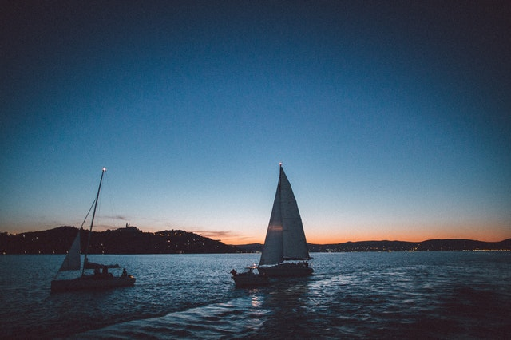
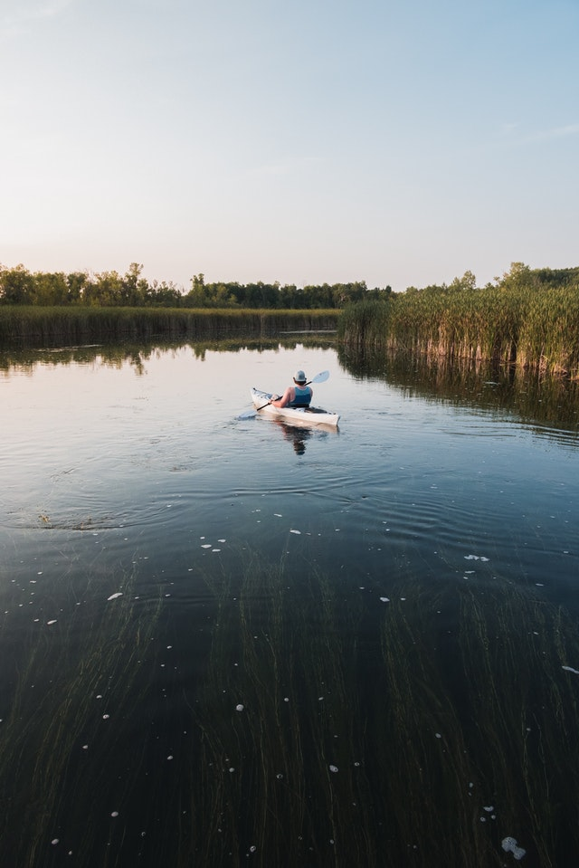

STRAND
Balaton
A Balaton (költői nevén „a magyar tenger”, becenevén Balcsi, németül: Plattensee, latinul: Lacus Pelso, horvátul: Blatno jezero) tó a Dunántúlon, Közép-Európa legnagyobb tava, Magyarország vízrajzának meghatározó eleme. Könnyen felmelegedő, sekély vize kiválóan alkalmassá teszi a fürdésre és sportolásra, élővilága rendkívül gazdag, a táj változatos vulkanikus kúpjaival sok tekintetben egyedi. Típusa geológiailag a Velencei-tóhoz hasonlóan tektonikus eredetű, sekély vizű ároktó. 77 km hosszú, legkisebb szélessége Tihanynál 1,5 km, legnagyobb 12,7 km Balatonvilágos és Balatonalmádi között,átlagos szélessége 7,7 km, felülete 600 km².Legmélyebb pontja a Tihanyi-szoros legmélyebb árkában az úgynevezett a „Tihanyi-kút”, ahol a tó medre 11-12,5 méter mélyen van. Más forrás szerint a kút mélysége 10,67 méter. A Szántód-Tihany kompjárat útvonalától mintegy 100-150 méterre keletre, a parttól körülbelül 300 méterre van. Az 59 800 hektár területen fekvő vizes élőhely keleti medencéjét a Tihanyi-félsziget választja el a tó többi részétől. Déli partjánál medre sekélyebb. Északi oldalán található a badacsonyi borvidék és a Tapolcai-medence, jellegzetes vulkáni tanúhegyeivel.
Tisza-tó
A tó feltöltése után magyar turisták kezdték el látogatni a tavat, mert sokkal olcsóbb volt a Balatonnál. Megkezdődött a falusi turizmus, a tó körül kempingek, szállodák, strandok épültek. A part mentén hat szabadstrand, Tiszafüreden pedig termálfürdők kínálnak fürdési lehetőséget. Abádszalók környékén a vízi sportok széles skálája gyakorolható, beleértve motoros vízi sportokat is. A horgászat a szabályok betartása mellett engedélyezett. A Tisza-tó vadvízi világa gyalog, kerékpárral, lóháton és csónakkal is bejárható. A Tisza-tavi madárrezervátum védett terület, csak vezetővel látogatható. 2012-ben nyílt meg Poroszlón a Tisza-tavi Ökocentrum, mely interaktív módon mutatja be a Tisza-tó és a Tisza-völgy természeti értékeit és élővilágát.
Szelidi-tó

A tó a nevét a víz közvetlen közelében fekvő faluról, illetve annak pusztulása után a közelben elterülő szántóföldi művelésre alkalmas Szelid pusztáról kapta. Szelid falucska a török adóösszeírások szerint az 1540-es években 20-25 családból állt (kb. 100 fő), eszerint átlagos alföldi magyar falu lehetett. A 16. század második felében elpusztult; határát onnantól, mint pusztát mindig a patajiak művelték és mindig Patajhoz tartozott. A tó nevét legendák is magyarázzák. Az egyik szerint Szelid neve a közeli Várdomb erődítményével és a török hódoltság harcaival függhet össze, ugyanis a török csapatok a magyar túlerőt látva, megállásra és kompromisszumokra kényszerültek, 'megszelídültek' ezen a területen. Egy másik legenda szerint Bence vitéz úgy meghajszolta lovait, hogy azok patái elvástak. De miután a lovak hosszasan a tó vizében állva ittak, sebeik gyorsan rendbe jöttek. A legvalószínűbb, hogy a tó neve egyáltalán nincs összefüggésben a szelíd melléknévvel. Minden bizonnyal a szel magyar igetőből származik.